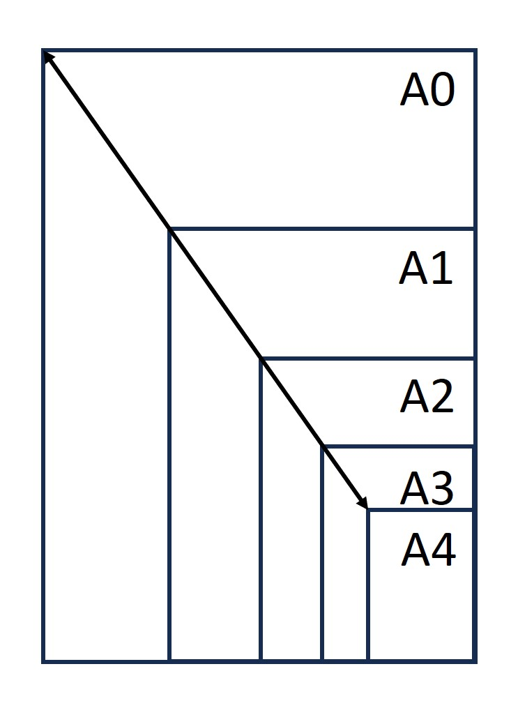
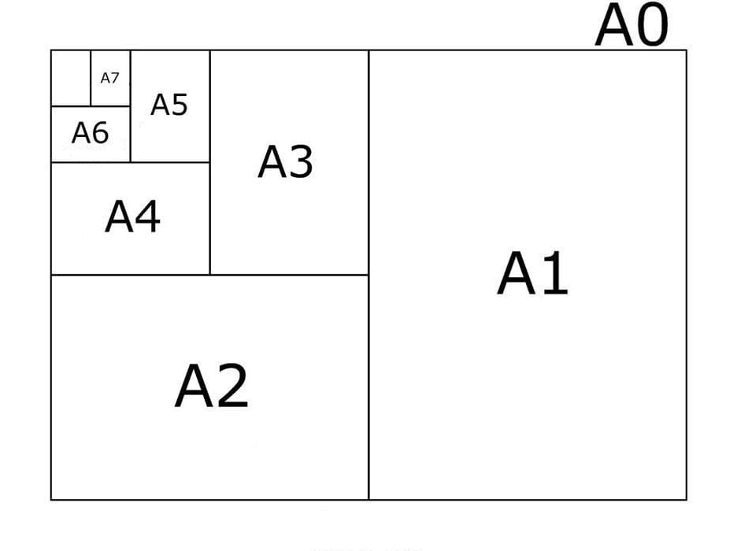
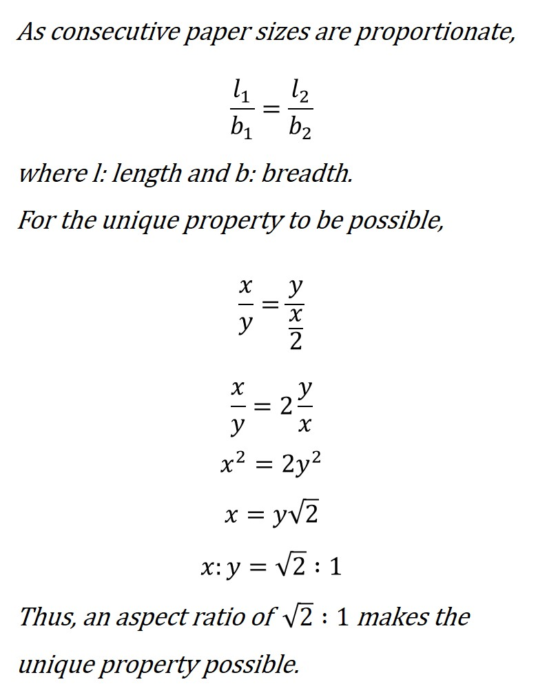

Stayin' alive is a 1977 chartbuster by the Bee Gees. It is also famous for another reason.
The song has a tempo of roughly 103 beats per minute (bpm), within the range of 100-120 bpm, required rate of chest compressions in CPR.
Hence, following the main tune of this song is an easy method to stay on beat while performing CPR.
Another device that is used to track the rate of beats is the metronome. It produces an click-like sound at regular intervals at a rate set by the user.
It is generally used by musicians to practice their timing. There are digital metronomes too, one example is this which comes up on typing metronome in google search:
The Bechdel test (pronounced bekdel), also called the Bechdel-Wallace test, is a simple, informal method to measure the extent of existence of women in works of fiction, usually films. To pass the test:
All these relationships between women, I thought, rapidly recalling the splendid gallery of fictitious women, are too simple. ... And I tried to remember any case in the course of my reading where two women are represented as friends. ... They are now and then mothers and daughters. But almost without exception they are shown in their relation to men. It was strange to think that all the great women of fiction were, until Jane Austen's day, not only seen by the other sex, but seen only in relation to the other sex. And how small a part of a woman's life is that ...
Some variants of the test also include that the two women must be named.
The test has limitations too:
Some films may pass the test despite containing sexist content, whereas other films may fail the test despite containing prominent female characters with significant and progressive stories.
The test is a quantitative measure more than a qualitative one, focussing only on the presence of conversations instead of the quality. It also doesn't assess the development of the female characters, their agency and the meaningfulness of their roles.
Some film contexts are disadvantaged to fail the test for reasons unrelated to gender bias, such as a film with a very few characters, like Gravity, or films which may discuss overcoming sexism in all-male settings, like Mulan.
Thus, this test cannot be used to determine if the film is feminist or not, and certainly cannot be used to determine the quality of the film.
However, the test is not about criticising individual works, but about highlighting recurring patterns and judging the industry in its representation of women, who constitute around half of the population, but are considered insignificant sometimes even in mainstream media. Though imperfect, it acts as a starting point to illustrate how a large percentage of films fail the test without any limitation (despite the low bar) due to the recurring pattern of lack of female characters in mainstream media whose lives don't revolve around just men.
This test has also inspired many other similar tests, such as the reverse Bechdel test, the Mako Mori test (does a female character have a narrative arc that is not supporting a man's story?), tests regarding other stereotypical characteristics, the Finkbeiner test (a checklist to help science journalists avoid gender bias in articles about women in science), the Johanson analysis (evaluating multiple aspects of female representation), etc.
15/6/25: A4 sheets
A4 sheets are ubiquitous, and efficient.
The A4 sheet belongs to a series, A series, defined by an international standard for paper sizes, ISO 216.
In this standard, there are different paper sizes, like the most commonly used A3, A4, A5, etc, all of which have the same aspect ratio, i.e. they are all proportionate/of the same shape.

However, due to the ratio of the side lengths (of consecutive paper sizes) and a clever aspect ratio, these paper sizes have a unique property, better explained visually:

That is, an A3 sheet folded in half vertically is equal in size to an A4 sheet, A4 folded in half for A5 and so on. A0, is defined such that its area = 1 square metre. In other words, a paper of this series when divided in half is proportionate to the original undivided paper, i.e. of the same shape.
This is because the length of A[n] is equal to the breadth of A[n-1], and the breadth of A[n] is equal to half of length of A[n-1], which is possible due to the aspect ratio maintained for all sizes is √2:1.

This is very advantageous in many places, one example is in designing posters on A4 which can later be scaled up or scaled down without affecting the poster and margins.
08/6/25: Calculus and Calculi
In Latin, the word calculus means 'small pebble'.
As such pebbles were used for counting distances, vote tally, and abacus arithmetic, the word came to also be the Latin word for calculation.
In the 17th century, Leibniz and Newton built on the work of earlier mathematicians and wrote their mathematical texts in Latin, due to which their work on continuous change (in small parts) came to be known as infinitesimal calculus originally, with two branches, diffrential calculus (dividing into small parts, crudely) and integral calculus (adding small parts).
In the 18th century, it also came to be used for mineral buildups in human and animal bodies, like kidney stones, as in renal calculi, calculi being plural form of calculus in Latin.
01/6/25: Garden-path sentences
A garden-path sentence is a grammatically correct sentence that starts in such a way that a reader's most likely interpretation will be incorrect; the reader is lured into a parse that turns out to be a dead end or yields a clearly unintended meaning.
Wikipedia page
That is, the meaning of the sentence the reader usually expects in the first part (of the sentence) doesn't end up matching with the second part.
Examples:
Time flies like an arrow; fruit flies like a banana
The complex houses married and single soldiers and their families.
Fat people eat accumulates.
Sometimes newspaper headlines too.
Miners Refuse to Work After Death
One real life example which actually inspired this post.
XYZ college hosts mock UN conference
These sentences are called so referring to an idiom, to lead (someone) down/up the garden path, which means to trick someone or to cause them to think/proceed wrongly. Thus these sentences, though gramatically correct, can confuse the reader, humorously at times.
[When I first came across this topic, I found it quite interesting and wanted a space to share it (and other such interesting things) with others, or just record it for myself. This inspired this blog, whose name, flies like an arrow, is in reference to the garden-path sentence I first found humorous.]
25/5/25: Hello world
This is a blog about some things I find interesting.
→web (World Wide Web)
→log (record of observations/incidents)
web-log => blog
video-blog => vlog